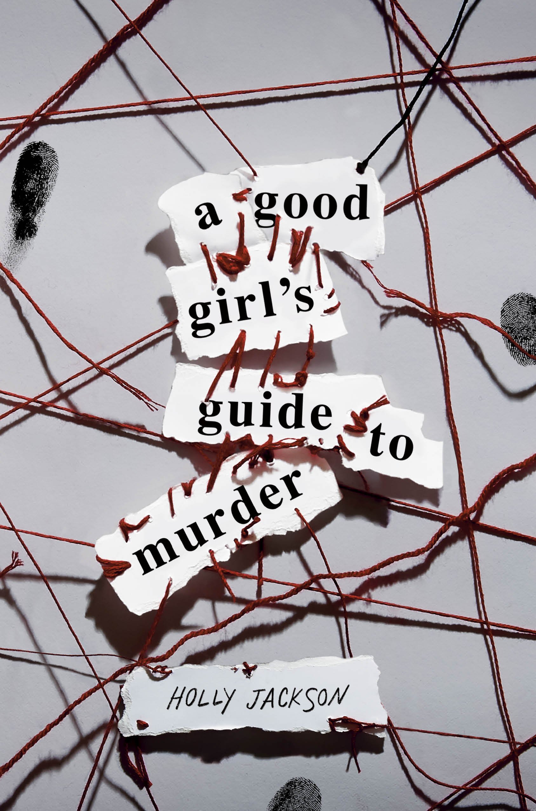
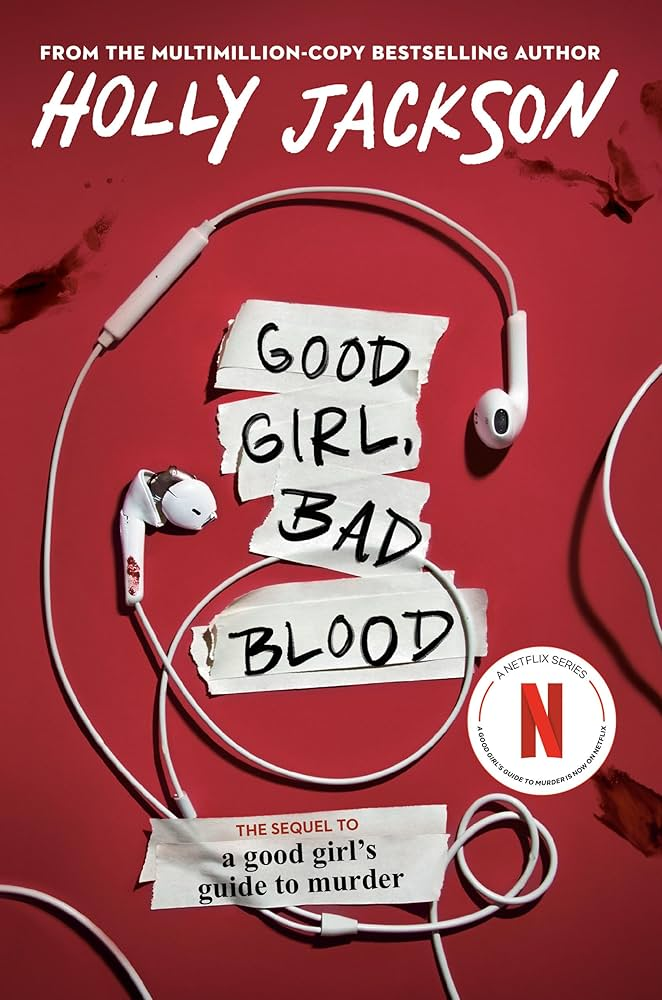
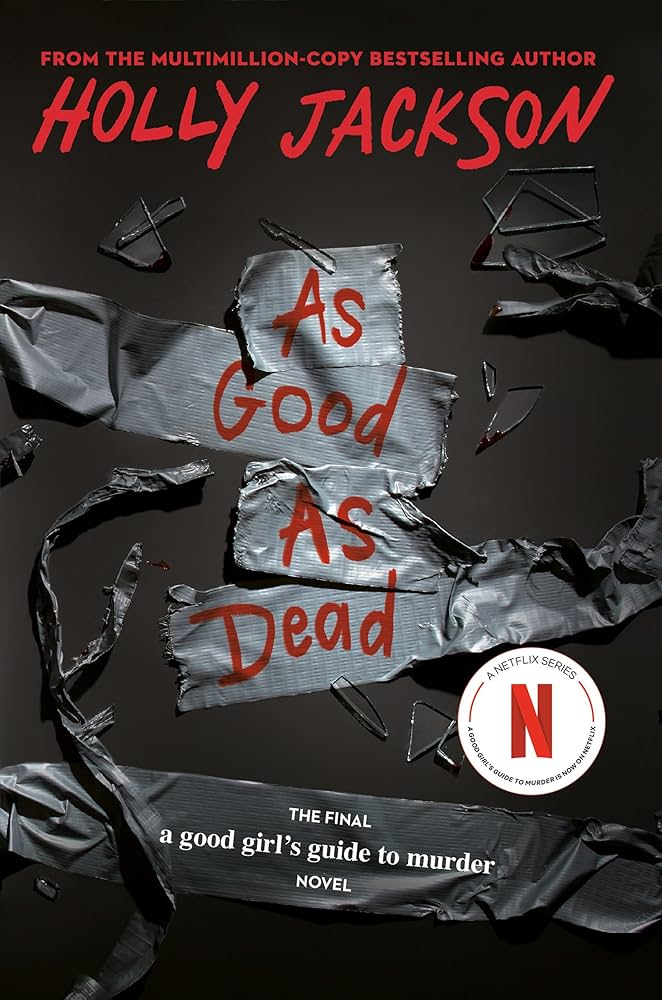

| Home | | Plot (season1) | | Plot (by the books) | | Characters and Cast | | Reviews |
|---|
BY THE BOOKS
 |
 |
 |
 |
|---|---|---|---|
| A GOOD GIRLS GUIDE TO MURDER | GOOD GIRL BAD BLOOD | AS GOOD AS DEAD | KILL JOY (NOVELLA) |
A GOOD GIRLS GUIDE TO MURDER
The case is closed. Five years ago, schoolgirl Andie Bell was murdered by Sal Singh. The police know he did it. Everyone in town knows he did it But having grown up in the same small town that was consumed by the crime, Pippa Fitz-Amobi isn't so sure. When she chooses the case as the topic for her final project, she starts to uncover secrets that someone in town desperately wants to stay hidden. And if the real killer is still out there, how far will they go to keep Pip from the truth…?
GOOD GIRL BAD BLOOD
Pip is not a detective anymore. With the help of (the ravishing) Ravi Singh, she released a true-crime podcast about the murder case they solved together last year. The podcast has gone viral, yet Pip insists her investigating days are behind her. But she will have to break that promise when someone she knows goes missing. Jamie Reynolds has disappeared, on the very same night the town hosted a memorial for the sixth-year anniversary of the deaths of Andie Bell and Sal Singh. The police won't do anything about it. And if they won't look for Jamie then Pip will, uncovering more of her town's dark secrets along the way... and this time everyone is listening. But will she find him before it's too late?
AS GOOD AS DEAD
Pip is about to head to college, but she is still haunted by the way her last investigation ended. She’s used to online death threats in the wake of her viral true-crime podcast, but she can’t help noticing an anonymous person who keeps asking her: Who will look for you when you’re the one who disappears? Soon the threats escalate and Pip realizes that someone is following her in real life. When she starts to find connections between her stalker and a local serial killer caught six years ago, she wonders if maybe the wrong man is behind bars. Police refuse to act, so Pip has only one choice: find the suspect herself—or be the next victim. As the deadly game plays out, Pip discovers that everything in her small town is coming full circle... and if she doesn’t find the answers, this time she will be the one who disappears...
KILL JOY
Pippa Fitz-Amobi is not in the mood for her friend's murder mystery party. Especially one that involves 1920's fancy dress and pretending that their town, Little Kilton, is an island called Joy. But when the game begins, Pip finds herself drawn into the make-believe world of intrigue, deception and murder. But as Pip plays detective, teasing out the identity of the killer clue-by-clue, the murder of the fictional Reginald Remy isn't the only case on her mind